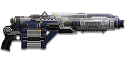

← Back to the NC05 Jackhammer comparison
Sage Guide · New Conglomerate · Heavy Assault only
Heavy Assault only — 1,000 certs / 699 DBC — New Conglomerate · Heavy Weapon
The only shotgun with no damage falloff and a 15-shell magazine — two pulls kill at any range, if all five pellets land. Treat it as a heavy shotgun, not a primary: it runs dry fast, and the burst mode is a trap.
Heavy Weapon — Heavy Assault only. It lives in your primary slot, and no other class can use it.

You arrive on a fight, sprinting, because that's how you got there. You see him first, you aim down sights while still moving, you hold the trigger — and your pellets go everywhere except into him. The kill feed says he killed you. This section is why.
When you sprint, your aim cone is at its widest — and it stays wide until you stop moving and wait. Firing from a sprint doesn't just make your shots inaccurate: your whole pellet pattern is centred on a point that can be anywhere inside that wide cone. Five pellets, 2.5° of spread, all of them faithfully centred on the wrong place.
Aiming down sights while still moving doesn't fix it. The sight doesn't shrink the pellet spread — it is 2.5° hip or ADS — and it doesn't shrink the cone you fired from, either. All it does is steady the pattern's centre, and the centre was never the problem: where it was pointing was. And no falloff doesn't save you: 112 damage a pellet means nothing when the pellets land on the wall.
Stop. Aim. Then shoot. Release the sprint key, let your feet stop, give the cone a beat to close, then pull the trigger. On this gun that beat is short — but it is not optional, and it is not zero.
One difference from a rifle: there is no bloom on a shotgun. The cone never grows as you fire, because the cone is the pellet spread — constant on every pull, the same hip and ADS. Each pull is deliberate on a semi-auto gun, so use that: one pull, re-aim, one pull. Two paced pulls kill at any range this gun reaches.
The exception: inside 5 metres, don't aim down sights at all — hipfire and keep moving. The pattern is 0.22 m wide at 5 m; it fits a torso without a sight. ADS only slows you down at that range.
Four beats, left to right — the same mistake the cards above describe, drawn out.
1 · SprintingYour cone starts maxed at 7.0° — the widest it can ever be.
2 · Trigger heldFiring from the hip while running — every shot adds bloom.
3 · ADS, mid-holdThe sight looks precise — but aiming down sights does not reset bloom.
4 · The sprayBullets fly out of the wide cone you built. The enemy walks away.
Same fight, done right. Each beat has a job, and the order is the whole lesson.
1 · StopLet go of sprint (and the trigger). About 0.3 s for the gun to settle.
2 · AimPress ADS and let the sight come up (~0.15 s).
3 · FireNow fire — from the aimed cone. First shots land where the dot points.
The exception — under ~8 m, skip the whole danceHipfire works, no ADS needed, and stopping is optional. Keep moving, strafe, and let the hipfire ring do the work.
Every pull throws 5 pellets, each worth 112 damage — at every range. There is no falloff on this gun: 5 × 112 = 560 damage a pull at 5 m and at 50 m, so the kill is 2 pulls wherever you are standing. The question is never how much damage the pellets do. It is how many of them land.
Damage is per pellet. A "pull" is one trigger pull — the whole pattern. Shots to kill counts pulls, never single pellets. Headshots multiply each pellet by 1.5×, but on a shotgun that rarely changes the count: aim centre of mass and let the pattern do the work. The table assumes every pellet lands; section 03 is about how many actually do.
| Range | Damage per pellet | Damage per pull | Pulls to kill (chest) | Pulls (head) | Pulls (shielded Heavy) | Best-case TTK |
|---|---|---|---|---|---|---|
| Every range | 112 | 560 | 2 | 2 | 3 | 0.27 s |
| Burst mode, 2nd pull | 112 | 560 | 2 | 2 | 3 | 0.13 s |
Headshots don't change the count: all 5 pellets to the head is 840 damage — still 2 pulls. The Heavy's shield is the only thing that adds a pull. Best-case TTK is (pulls − 1) × 267 ms in semi-auto; in burst mode the second pull comes at 133 ms, but then the gun chambers for 650 ms — 171 RPM sustained, which is why burst is a trap (section 04).
Flat at 112 damage per pellet, 0–100 m. No falloff line to draw.
No falloff at all: 112 damage per pellet at every range. The line is flat because the damage never drops — what drops with range is how many pellets actually land (section 03).
The Jackhammer has no Flechette or Slug attachment, and it doesn't need one: the damage is already flat at every range. Its range limit is the pattern, not the damage — at 20 m the 2.5° spread is 0.87 m wide, so only 2–3 of the 5 pellets land on a torso. That is 224–336 damage a pull in practice, not 560. Section 03 is about that gap.
First-shot kick: Census and the wiki agree on a 2× first-shot multiplier. The workbook says 2.4 — the Census figure is used here. Velocity: Census says 300 m/s; the wiki infobox says 400 m/s. Census wins — 300 m/s is the figure used here.
Per-pellet damage at any range, with the pulls to kill and the best-case TTK that follow from it. Same model as the table above — move the slider and watch nothing change: the damage is flat at every range.
Short reload 2.7 s, on empty 3.7 s — the difference is the chamber time after the last shell. Shells load one at a time, and you can interrupt the reload and fire with whatever is already loaded. So reload in short bursts between fights, and never let it run dry: the empty reload is the one that gets you killed. The Jackhammer's 15-shell magazine tempts you to skip reloading — don't. Fifteen shells is seven kills and a miss, not a bottomless mag.
A shotgun's range is not set by its damage. It is set by the size of the pattern against the size of a torso.
2 pulls to kill at every range, and here the pellets all land: the pattern is 0.22 m wide at 5 m. Hipfire, keep strafing, two paced pulls. ADS here only slows you down.
Still 2 pulls — the damage hasn't changed. What changes is the pattern: 0.52 m wide at 12 m, 0.87 m at 20 m. ADS to keep the pattern's centre on the chest, one pull, re-aim, one pull. Expect 4–5 pellets on target at 12 m, 2–3 at 20 m — still a kill, but there is no margin for a miss.
Still 112 per pellet — still 2 pulls on paper. In practice the pattern is wider than a torso, so 2–3 pellets land and the kill takes 4+ pulls. The Jackhammer is the only shotgun that can hurt at 30 m, and it is still not a 30 m gun. Close in.
That is the whole range game, and it is why the damage chart in section 02 is only half the story: the chart assumes every pellet lands. The pattern decides how many do, and the pattern grows with distance — 4° of spread is 0.35 m wide at 5 m and 1.40 m at 20 m. Section 05 draws it to scale so you can see it.
Click once per pull — no holding: this gun fires one pull per trigger press. The bar empties as the gun settles; wait for it before the next pull. That pause is the re-aim beat.
There is no bloom on this gun — no ADAD rhythm to manage, no cone that grows as you fire. The cone is the pellet spread: constant on every pull, the same hip and ADS. What changes with stance is where the pattern is centred, and what changes as you fire is where the next pull's centre lands. The table is the whole stance story:
| Stance | Pellet spread | What changes |
|---|---|---|
| Standing still, hipfire | 2.5° | Pattern centre: 0.15° CoF — the pattern is the cone; your aim point sits in the middle of it. |
| Standing still, ADS | 2.5° | Same spread — the sight steadies the pattern's centre, it doesn't shrink it. There is no Smart-Choke for this gun. |
| Moving / strafing, hipfire | 2.5° | Same spread; the pattern centre wanders with your movement. |
| Moving, ADS | 2.5° | Same spread; ADS move speed 0.75× — you strafe slower for a steadier centre. |
| Sprinting | maxed | Never start firing from a sprint — the pattern centre can be anywhere inside the sprint cone. Stop first. |
The spread never changes. ADS doesn't shrink it, moving doesn't grow it, crouching doesn't touch it. Only the Smart-Choke changes it (section 06) — and only by trading hipfire width for ADS tightness.
One pull per trigger press, 267 ms apart at most. Two paced pulls kill at any range the pellets reach, and you keep the full 5-pellet pattern and the 2.5° spread. This is the mode to use.
Press B and the gun fires 3 pulls at 450 RPM — then chambers for 650 ms. That is 171 RPM sustained, slower than semi-auto, with a wider 3.5° spread and only 4 pellets a pull. Dorf's verdict: burst fire is "pretty bad these days". It feels faster. The clock says it isn't.
The refire time is the floor, not the target. The beat that matters is the one you take to put the dot back on the chest after the 1.2° vertical kick — and the first pull kicks twice as hard (Census first-shot multiplier 2×), so re-aim before the second pull, not after it.
A target 8 m away, firing from the hip. Click FIRE once per pull. Each pull throws 5 pellets; the bar empties as the gun settles. Wait for it to empty before the next pull — that is the re-aim beat. Mash the trigger and the pellets land where the last pull's recoil left the muzzle.
Your pulls will be graded here — green when you wait out the re-aim beat.
A full-size target 8 m away — an arm's-length room fight. The rings show where your pellets can land around your aim point (the chest). Sizes are drawn to scale from the gun's real pellet spread: spread diameter = 2 × distance × tan(spread ÷ 2).
Read it this way: the ring is the whole pattern, not a miss radius — pellets land anywhere inside it, scattered at random. Keep the ring on the torso and most of the pellets hit; let the ring grow wider than the torso and the edge pellets start missing entirely. That is the whole range game on this gun: at 8 m the ring fits a chest, at 20 m it doesn't. (Ring sizes use the real geometry: spread diameter = 2 × distance × tan(spread ÷ 2).)
One ring, because there is only one spread: 0.35 m at 8 m, the same hip or ADS, with or without a sight. The Jackhammer's advantage is that its ring is the smallest in this set — 2.5° against the autos' 4°. At 20 m it is still 0.87 m wide, so the pattern is wider than a torso and only 2–3 pellets land. That is the range limit, drawn to scale.
Every pull kicks the muzzle sideways. Re-aiming between pulls puts the pattern back on the chest. Same 6 pulls, two very different outcomes:
One pull, re-aim, one pull — that is the whole firing discipline on this gun. The refire time is the floor, not the target: the beat that matters is the one you take to put the dot back on the chest. Mash the trigger and you are firing at where the last pull's recoil left the muzzle, not where the enemy is.
No zoom. The target at 35 m is small but the view is wide open — you see the crate, the tower, and the next enemy coming. Fast to aim, nothing blocks your edges. Best inside ~40 m.
Same target, same 35 m — but he looks twice as tall, so placing shots on his chest and head gets much easier. The price: your view narrows to the round window, the crate and tower are gone, and close targets feel fast and huge. Best at 25–50 m.
A 1x sight on the left, a 2x on the right — the same target, the same distance. The 1x is the default for a gun that lives inside 20 m. The 2x is worth it on the Jackhammer because the gun still hits at 30 m — it is the one shotgun where a magnified sight isn't a joke.
Nothing is pre-equipped on this gun: every attachment costs certs, on top of the 1,000-cert gun. Buy in the order below and the gun gets better with every purchase.
| Attachment | Cost | Verdict | What it does |
|---|---|---|---|
| TekLyte Reflex (1x) | 30 | First buy | The default sight. Clear, fast, and all you need at this gun's range. |
| GD RefleXR (2x) | 30 | Good | Worth it on this gun — the Jackhammer still hits at 30 m, so a 2x sight isn't a joke here. |
| HS/NV Scope (1x) | 30 | Situational | Thermal-style night sight. Fine at night; the 1x reflex is better by day. |
| LX Tacti-Eye (3.4x) | 30 | Skip | Too much magnification for a shotgun. You lose the room to find the head. |
| LACO (3.4x) | 30 | Skip | Too much magnification for a shotgun. You lose the room to find the head. |
| TrueShot (4x) | 30 | Skip | Too much magnification for a shotgun. You lose the room to find the head. |
| LX Mark IV (4x) | 30 | Skip | Too much magnification for a shotgun. You lose the room to find the head. |
| BDS (6x) | 30 | Skip | A joke on a shotgun. Do not buy it. |
| Attachment | Cost | Verdict | What it does |
|---|---|---|---|
| Darklight Flashlight | 100 | Situational | Shows cloaked Infiltrators. No recoil benefit. |
| Extended Magazine (+3 shells) | 100 | First buy | +3 shells (15 → 18). Nine two-pull kills a mag instead of seven. |
| Laser Sight (MPL) | 100 | Good | Hip vertical and horizontal recoil −60%. The Jackhammer's horizontal recoil is only 0.4°, so the laser's benefit is modest — but this is a hipfire gun, and it helps there. |
Buy in this order: 1x sight (30) → Extended Magazine (100). That is the whole build at 130 certs. MPL after that if you hipfire a lot; the 2x if you fight at the long end.
Attachment mountability comes from the Census attachment list for this weapon; costs and the long/short reload from the wiki.
Four builds. The recommended one is the one with the testing behind it; the others are honest alternatives for different fights.
0 certs
What the gun is out of the box. Fifteen shells, two pulls a kill at any range — the attachments below add margin, not damage.
130 certs
18 shells, nine two-pull kills a mag instead of seven. This is the whole build, and it is all the Jackhammer needs.
130 certs
Hipfire the whole mag. The laser trims the hip recoil; the 1x keeps the pattern's centre honest when you do ADS.
130 certs
For the 15–30 m end, where the Jackhammer still hits and a 2x sight is worth having — the one shotgun where a magnified sight isn't a joke.
Know the losing matchups before you walk into them. A shotgun's weaknesses are all range and reload — which means they are all decisions, not stats.
Ten minutes in the VR training room, before you take this gun into a real fight. Do them in order — each one builds on the last.
Pocket summary: Semi-auto, two paced pulls. Reload after every fight. Burst is a trap. The pattern, not the damage, sets your range.